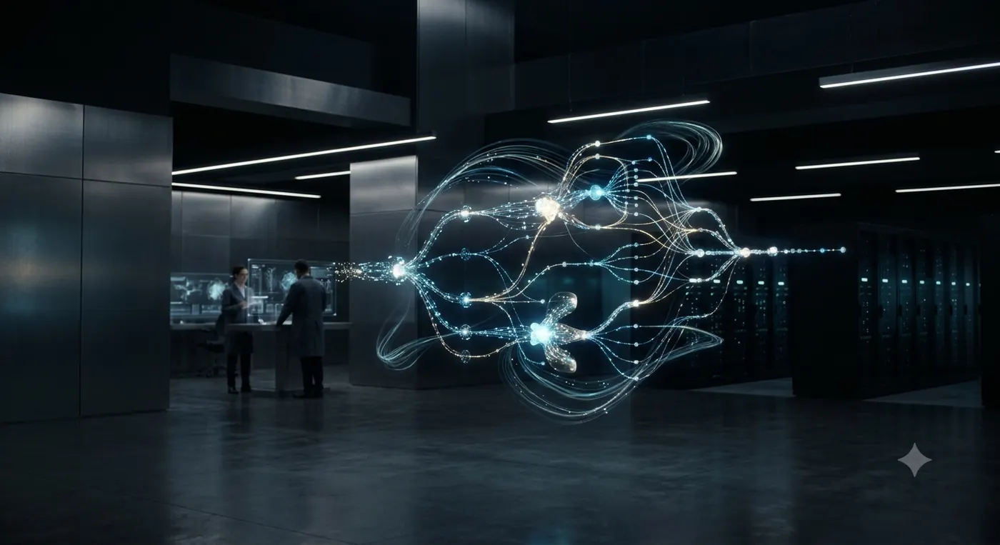
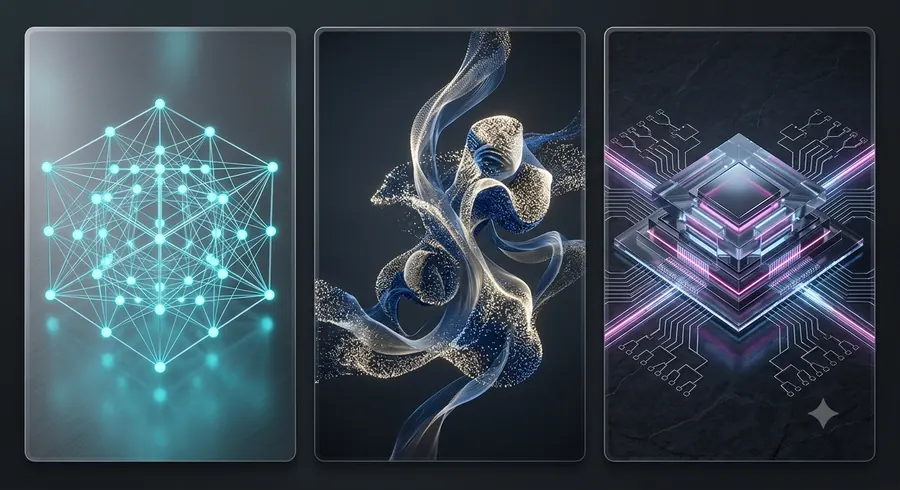
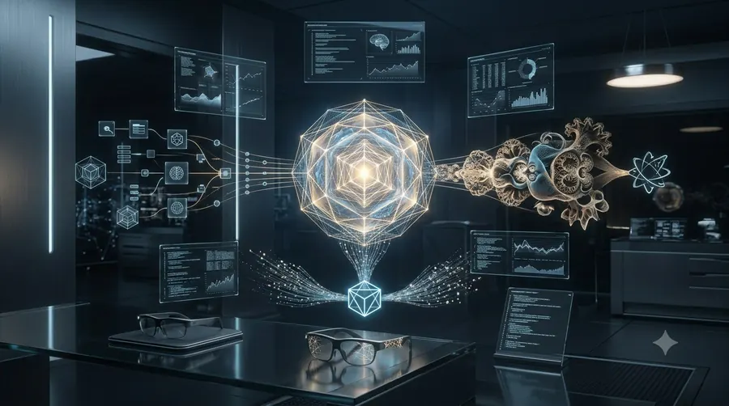
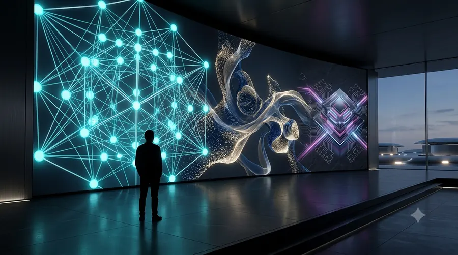
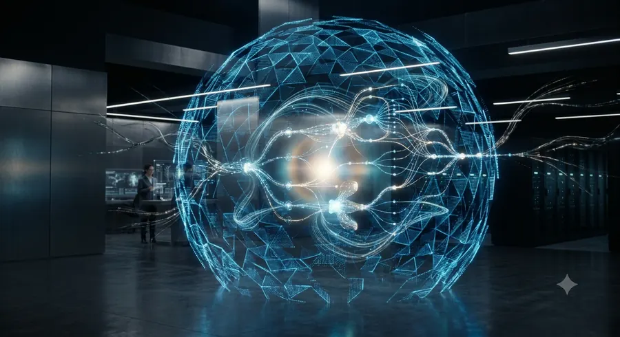

Projects
The full portfolio.
Every listed project here is real and actively tracked — description, language, and last-updated date, sourced from private repositories. The code stays private; the work doesn't.

LiveLumi K2
A school management system that brings administration, records, and communication into one calm place.
Eval Harness
Release-gating benchmark suite that every Lumi family model and prompt change runs through before shipping.

LiveTrace Log
Structured logging and observability library shared across every Lumi family backend service.

In progressYugen Runtime
An agent orchestration runtime for tool-use and multi-step planning research — the engine behind Yugen.

In progressAegis Sentinel
An early-stage AI-assisted threat-triage prototype for prioritising security alerts under real alert volume.

PausedTutor Trace
A classroom analytics experiment that fed directly into Lumi K2's design, now paused while K2 takes priority.
No projects in this research area yet.